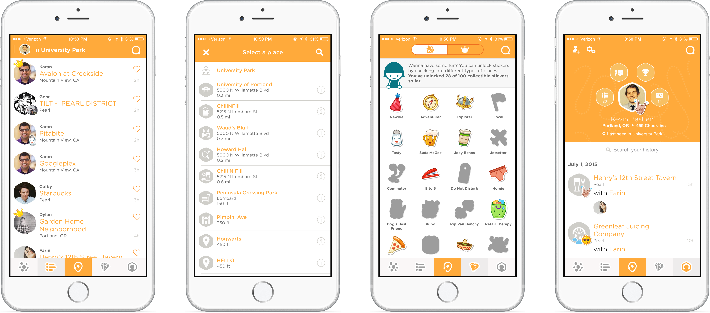

I always find myself downloading and trying out new apps. So I thought I would share and highlight the ones that stick out. My goal is to help spotlight some apps that the majority of people are not as familiar with. Hope you find this useful! Enjoy.

Today I chose the Swarm app. I find myself using this everyday. Swarm, an app from Foursquare, is the fastest way to keep and meet up with your friends. With Swarm, you can check in to tell friends what you’re up to, easily see who’s out nearby, and who wants to hang out later. A cool feature they brought back is the mayorship badges. All you have to do is check in more than anyone else and you’ll unlock a mayor crown. Feel free to check out the app and download it here. Let me know what you think!